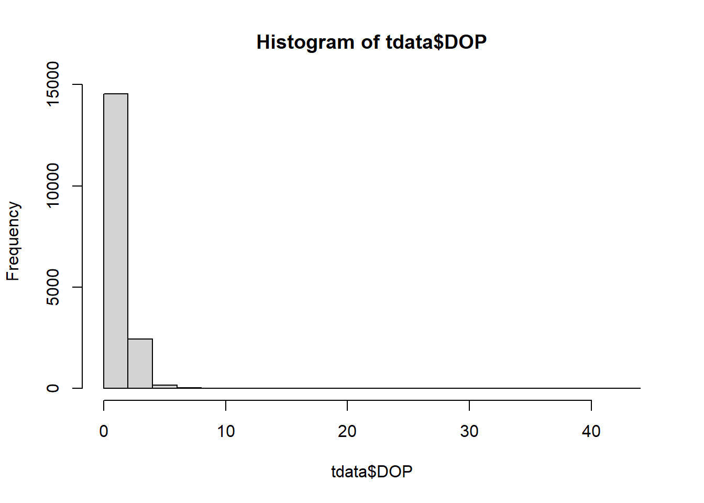

In this course we will be using Telemetry data from Mountain Caribou (Rangifer terendus) herds in the Peace region of British Columbia. While the full dataset and metadata can be found on movebank, we will be working on a modified subset throughout this course. TEST
1. Reading our data into R.
Our first step is to see what our data looks like. In this course we will be providing two csv files (Mountain caribou in British Columbia-reference-data.csv and Mountain caribou.csv).
# Read in our data files.library(sf)
Linking to GEOS 3.9.3, GDAL 3.5.2, PROJ 8.2.1; sf_use_s2() is TRUE
library(readxl)library(dplyr)
Attaching package: 'dplyr'
The following objects are masked from 'package:stats':
filter, lag
The following objects are masked from 'package:base':
intersect, setdiff, setequal, union
ref_raw <-read.csv("data/Mountain caribou in British Columbia-reference-data.csv")loc_raw <-read_excel("data/Mountain caribou.xlsx")
Lets take a look….
head(ref_raw)
tag.id animal.id animal.taxon deploy.on.date deploy.off.date
1 151.51 HR_151.510 Rangifer tarandus
2 C04a GR_C04 Rangifer tarandus 59:00.0
3 C03 GR_C03 Rangifer tarandus
4 151.805 HR_151.805 Rangifer tarandus
5 151.76 HR_151.760 Rangifer tarandus
6 151.72 HR_151.720 Rangifer tarandus
animal.death.comments animal.life.stage animal.reproductive.condition
1
2
3
4
5
6
animal.sex animal.taxon.detail attachment.type deploy.off.latitude
1 f caribou collar NA
2 f caribou collar NA
3 f caribou collar NA
4 f caribou collar NA
5 f caribou collar NA
6 f caribou collar NA
deploy.off.longitude deploy.on.latitude deploy.on.longitude deploy.on.person
1 NA NA NA
2 NA NA NA
3 NA NA NA
4 NA NA NA
5 NA NA NA
6 NA NA NA
deployment.comments deployment.end.comments deployment.end.type
1 unknown
2 unknown
3 unknown
4 unknown
5 unknown
6 unknown
deployment.id manipulation.type study.site tag.beacon.frequency
1 151.510_151.510 none Hart Ranges 151.510
2 C04_C04a none Graham NA
3 C03_C03 none Graham NA
4 151.805_151.805 none Hart Ranges 151.805
5 151.760_151.760 none Hart Ranges 151.760
6 151.720_151.720 none Hart Ranges 151.720
tag.manufacturer.name tag.model tag.serial.no
1
2
3
4
5
6
tdata <- tdata %>%filter(date !="NA")tdata <- tdata %>%mutate(date_time =ymd_hms(date)) # Note the Universal Coordinated Time Zone# lets split this data format into something more useful tdata <- tdata %>%mutate(year =year(date_time )) %>%mutate(month =month(date_time ),day =day(date_time),hour =hour(date_time),minute =minute(date_time))
Now we have fixed our data entry problems we also want to review the spatial accuracy. We have two metrics : DOP (Dilution of Precision), and a Fix Type.
# DOP range (tdata$DOP)
[1] 1.0 43.1
hist(tdata$DOP)

# for this example we only want to keep fixes with a DOP less than 10mfdata <- tdata %>%filter(DOP <=10)# Fix Type : fixtype <- fdata %>%group_by(FixType) %>%summarise(count =n())